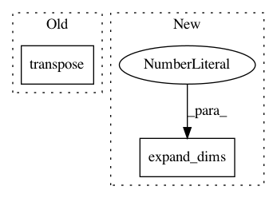

1b3c36d9b20fff47a3a6f2c9e3da5717059c6e3a,luminoth/models/fasterrcnn/network.py,FasterRCNN,_generate_anchors,#FasterRCNN#Any#,254
Before Change
all_anchors = (
self._anchor_reference.reshape((1, num_anchors, 4)) +
tf.transpose(
tf.reshape(shifts, (1, num_anchor_points, 4)),
(1, 0, 2)
)
)
all_anchors = tf.reshape(
all_anchors, (num_anchors * num_anchor_points, 4)
After Change
// Expand dims to use broadcasting sum.
all_anchors = (
np.expand_dims(self._anchor_reference, axis=0) +
tf.expand_dims(shifts, axis=1)
)
In pattern: SUPERPATTERN
Frequency: 3
Non-data size: 2
Instances
Project Name: tryolabs/luminoth
Commit Name: 1b3c36d9b20fff47a3a6f2c9e3da5717059c6e3a
Time: 2017-09-25
Author: javirey@gmail.com
File Name: luminoth/models/fasterrcnn/network.py
Class Name: FasterRCNN
Method Name: _generate_anchors
Project Name: GPflow/GPflow
Commit Name: 8d9d4599a79f86f53117bbe6b3aa17a91b15f98f
Time: 2016-04-13
Author: james.hensman@gmail.com
File Name: GPflow/sgpr.py
Class Name: GPRFITC
Method Name: build_likelihood
Project Name: keras-team/keras
Commit Name: 08014eea360fd8d66b7baab19cdb9335f52c167b
Time: 2016-08-24
Author: francois.chollet@gmail.com
File Name: keras/backend/tensorflow_backend.py
Class Name:
Method Name: repeat